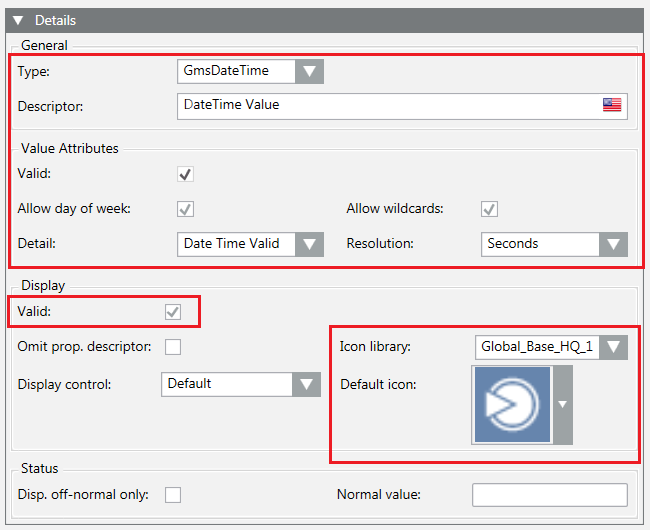

GmsDateTime Configuration
GmsDateTime Configuration Data | ||
Data | Use | Description |
GmsType | Mandatory | GMSDATETIME |
Attributes | Optional | Object containing the attributes of the property. For details, see Table GmsDateTime Attributes, below. The empty object (“Attributes”: { }) resets the attributes data. |
GmsDateTime Attributes | ||
Data | Use | Description |
Valid | Optional | Validity flag. If false, the display data is set but considered invalid. |
Properties | Optional | Object containing the valid properties. For details, see Table GmsDateTime Properties, below. If the object is empty (“Properties”: { }), the values are set to false. |
TimeDetail | Optional | String representing the time detail. For details about the acceptable values, see Table TimeDetail Values, below. If the string is empty (“TimeDetail”: “”), the value is set to |
TimeRes | Optional | String representing the time resolution. For details about the acceptable values, see Table TimeRes Values, below. If the string is empty (“TimeRes”: “”), the value is set to |
GmsDateTime Properties | ||
Data | Use | Description |
AllowDayOfWeek | Optional | True to allow the day of the week representation. |
AllowWildcards | Optional | True to allow the use of wildcards. |
TimeDetail Values | |
Data | Description |
NONE | Nothing valid. |
DATE | Property that contains a value representing a date. |
TIME | Property that contains a value representing a time. |
DATETIME | Property that contains a value representing a date and a time. |
TimeRes Values | |
Data | Description |
SEC | Property that contains a time value with a resolution for the seconds display. |
10TH | Property that contains a time value with a resolution of the 10th seconds. |
100TH | Property that contains a time value with a resolution of the 100th seconds. |
Example
{
"Name": "String_Value",
"PvssType": { "PvssType": "STRING" },
"VL": true,
"AL": true,
"Persist": true,
"GroupId": "CONFIG",
"Description": [ { "Culture": "en-US", "Text": "DateTime Value" } ],
"Display": {
"Valid": true,
"Icon": {
"Library": "Global_Base_HQ_1",
"Name": "Op_DP_Generic_None_001.png"
}
},
"GmsType": {
"GmsType": "GMSDATETIME",
"Attributes": {
"Valid": true,
"Properties": {
"AllowDayOfWeek": true,
"AllowWildcards": true
},
"TimeDetail": "DATETIME",
"TimeRes": "SEC"
}
}
}
The following image shows the corresponding fields in the Models & Functions tab:
